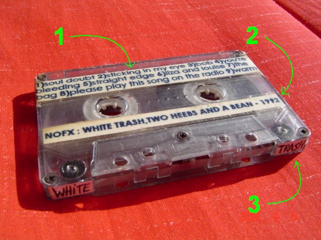

Essa "fita informativa" acabou surgindo como um subproduto do porta-fitas com palitos de sorvete, pois este inutiliza as capinhas plásticas das fitas (economizando espaço).
A idéia é grudar papéis na fita onde constam informações importantes como o nome/tempo das músicas, do álbum e da banda.
Material
- Uma fita cassete
- Papel branco
- Caneta ou computador com impressora
- Fita adesiva transparente (durex) largura 1cm
- Fita adesiva transparente (durex) largura 2cm opcional
- Papel adesivo branco opcional
- Tesoura

Fita etiquetada e informativa
Nº 1 - Número, nome e tempo das músicas
É simplesmente um papel com texto impresso no computador (ou escrito a mão), grudados na fita de ambos os lados com uma fita adesiva transparente. Para ficar melhor, é aconselhável usar a fita adesiva de 2cm de largura, para não ficarem emendas.
Nº 2 - Nome da banda, nome do álbum, data do álbum
Novamente um papel impresso ou escrito, com uma linha apenas, colado com fita adesiva transparente simples, de 1cm de largura, de ambos os lados da fita.
Nº 3 - Identificação da fita
Essas partes brancas na parte de baixo da fita, servem para identificá-la facilmente em meio às outras, quando estiver no porta-fitas (veja aqui a foto do porta-fitas lotado). Se tiver o papel adesivo melhor, basta escrever nele uma identificação, como parte do nome do álbum ou da banda, ou qualquer coisa que te lembre o conteúdo da fita. Na falta do papel adesivo (tem nas papelarias), escreva num papel normal e cole com cola branca mesmo.
{kind=link}
Aprenda mais:
- Como pintar o cabelo com papel crepom
- Como retirar os pontos de uma ferida (machucado, sutura)
- Adesivo para colar na lataria do carro (Plotter, Vinil)
- Como fazer um barquinho de papel
- Como pintar camiseta com caneta para tecido
- Como pintar camiseta com tinta para tecido
- Desenho matriz para pintar na camiseta
- Porta-fitas cassete (k7) feito com palitos de sorvete